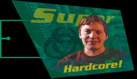

|
|
||||||||||||
|
|||||||||||||
|  | |||||||||||||
| This man is the director of GTA, Mr. Keith Hamilton. As well as being a top level computer programmer, he also likes to rap. Click on his photo to hear him rap about the game. Music by Steve Banks.
Grand Theft Auto has over 60 minutes of original music, recorded by some of the world's top recording artists. In just a few short weeks we will be bringing you more information about the men behind the awesome sounds you can here as you cruise around Liberty City, San Andreas and Vice City in your (or someone else's) car. This will include interviews with some of the bands responsible (including one who has got a full 8 album deal on the back of his work on Grand Theft Auto), tour dates and a look behind the scenes at what it really means to be in a rock 'n' roll band. We will also be offering you the chance to download parts of the sound track, and to listen to the radio station of your choice while cruising around the site. Grand Theft Auto has seven different types of music for you to choose from: Hip Hop, 70's Funk, Chart, Dance, Techno, Rock, and it wouldn't be the good ol' US of A without some finest Country Please check this space for more details.
|
 |